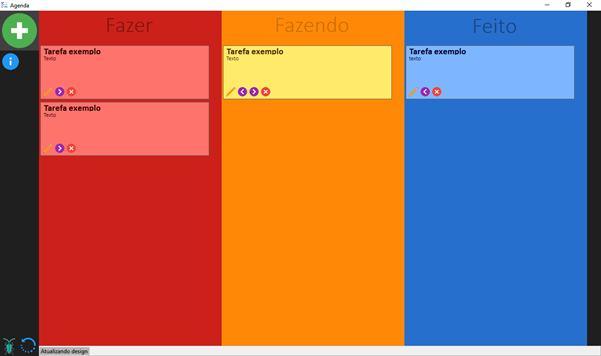
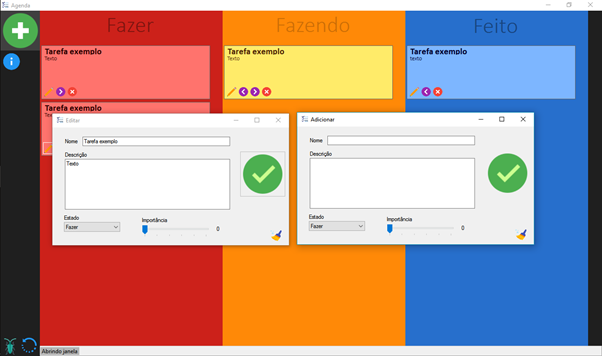
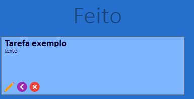
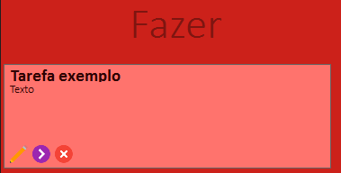
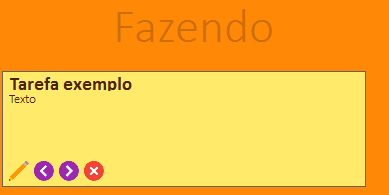
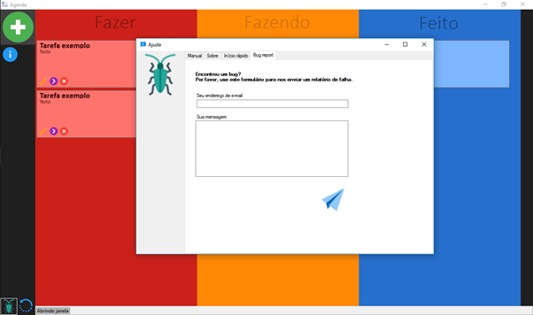
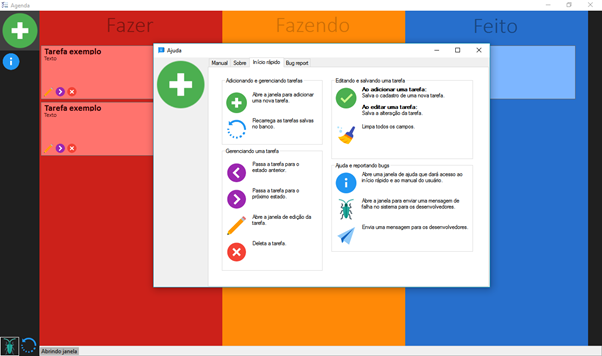
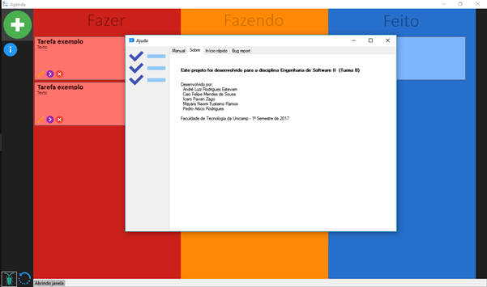

Manual do Usuário
Sumário

Para adicionar uma nova tarefa o usuário deverá clicar no ícone “” localizado no canto esquerdo superior da tela.

O usuário deverá preencher os campos “nome”, “Descrição”, além de selecionar o “Estado” e definir a “Importância”. Após ter feito isso, basta clicar no símbolo “”e a tarefa será adicionada.
Obs: é possível deixar os campos “Nome” e “Descrição” vazios, e assim o programa atribuirá um nome padrão para esses campos. Quando isso ocorrer, o sistema pedirá a confirmação de que se deseja manter os campos em branco.

Para excluir uma tarefa, basta clicar no ícone “”contido no canto inferior esquerdo da tarefa que se deseja excluir.

Para alterar uma tarefa, basta clicar no ícone “”contido no canto inferior esquerdo da tarefa que se deseja alterar.
Após isso basta realizar as alterações desejadas e clicar no ícone “”.

Para mudar o estado de uma tarefa, basta clicar nos ícones “” ou “”, de acordo com o destino desejado “Feito” ou “Fazer”.

Caso ocorra um erro durante o uso do software, o usuário poderá reporta-lo, enviando uma mensagem para os desenvolvedores. Para isso, basta clicar no ícone “ “ presente no canto inferior esquerdo da tela. Após isso, basta preencher os campos “Seu endereço de e-mail” e “Sua mensagem” e clicar no ícone “” para que a mesma seja enviada.


Para obter ajuda, basta clicar no ícone “ ” e será aberta a janela acima, onde pode-se obter várias abas de ajuda de acordo com a necessidade.
Para atualizar as tarefas do sistema, basta clicar no ícone “”, localizado no canto inferior esquerdo da tela.